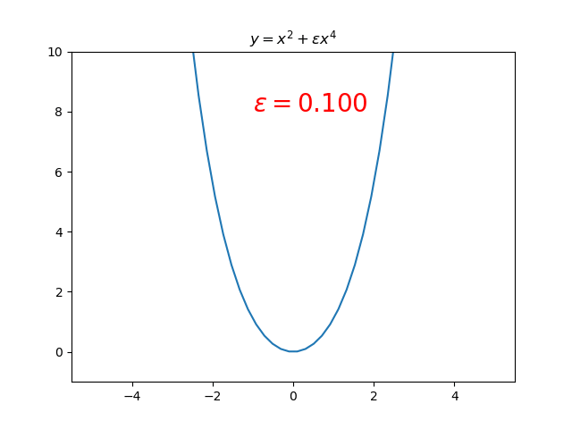

Carl Bender Mathematical Physics Lecture2 Note
Information
- 原出处: https://www.perimeterinstitute.ca/video-library/collection/11/12-psi-mathematical-physics
- 可以看自动生成的字幕: https://www.youtube.com/playlist?list=PLzcd6SoIscwjHuWRE38UXWG92uq0Sy4UF
- Bilibili: https://www.bilibili.com/video/BV1w4411q7x6?from
search&seid7852838902448285010 - Book: Carl M. Bender, Steven A. Orszag, Advanced Mathematical Methods for Scientists and Engineers I Asympotic Methods and Perturbation Theory, 1999
Keywords
The Schrodinger equation. Riccati equation. Initial value problem. Perturbation series approach to solving the Schrodinger equation. The eigenvalue problem
Really Really Hard Probles
任何形如
$$\begin{align} \label{eq:2ndODE} y'' + a(x)y' + b(x) y = 0 \end{align}$$的微分方程都可以化为
$$\begin{align} \label{eq:SchEQ} y'' + Q(x) y = 0 \end{align}$$证明: 令 $y = U(x)z(x)$ . 代入 (\ref{eq:2ndODE}) 得 \begin{align} U''z + U z'' + 2 U'z' + a U'z + aUz' + bUz = 0 \end{align} find a $U$ 使得 $z'$ 的项消失, 也就是 $U$ 满足 \begin{align} \frac{U'}{U} + \frac{a}{2} = 0 \end{align} 这是一个一阶, separable 方程, 一定是可解的. 解得 \begin{align} U(x) = e^{-\int^x \frac{a(s)}{2}\mathrm{d}s} \end{align} 可以加上一个常数, 但是是无所谓.
而 (\ref{eq:SchEQ}) 是一个 very very hard problem. 为什么 very very hard?
Why So Hard?
first order linear equation $y' + a(x)y = b(x)$ 是一个 routine standard EASY problem, 因为它可以 用 integrating factor 来解. 下面说明, (\ref{eq:SchEQ})为什么 它 so hard
如果这个问题好解的话, 只有下面一种方法. 采用简化的符号 $D\equiv \frac{\mathrm{d}}{\mathrm{d}x}$ . 因此 $y' + a(x)y = b(x)$ 变为 \begin{align} \label{eq:unfactored} [D^{2} + a(x)D +b(x) ] y(x) = 0 \end{align} 方括号中是一个线性微分算符. 分析因式(线性算符的分解不是唯一的) \begin{align} \label{eq:factor} [D + A(x)][D +B(x) ] y(x) = 0 \end{align} 如果上式可以做到, 就已经解决了这个问题, 因为它分解成了两个一阶的问题. 所以这个问 题难的部分在于分析因式, 也就是寻找函数 $A(x)$ 和 $B(x)$. 把 (\ref{eq:factor}) 展开 \begin{align} (D^2 +AD + AB + B' + BD)y = 0 \end{align} 并与 (\ref{eq:unfactored}) 比较, 会得到 $A(x)$ 和 $B(x)$ 需要满足的方程 \begin{align} A + B =& a \\ AB + B' =& b \end{align} 通过消元解上述方程组 \begin{align} aB - B^2 + B' = b \end{align} 变成了一阶方程, great progress! 但它有 $B^{2}$ , 不是线性的. 它是一个有名的方程: Riccati. 只有一种方法解 Riccati 方程 \begin{align} y' = \alpha y^2 + \beta y + \gamma \end{align} 令 $y = Q \frac{W'}{W}$ (This is a very standard substitution for linearing nonlinear equations) , 那么 \begin{align} Q' \frac{W'}{W} + Q \frac{W''}{W} - Q \frac{W'^2}{W^2} = \alpha Q^2 \frac{W'^2}{W^2} - \beta Q \frac{W'}{W} + \gamma \end{align} 其中的二次项可以取适当的 $Q$ 使其消掉 \begin{align} Q = -\frac{1}{\alpha} \end{align} 然后两边乘上 $W$ \begin{align} Q' W' + Q W'' = \beta Q W' + \gamma W \end{align} 它是 linear homogeneous 的. 它得形式可以在书上找到, 比如它是 Bessel 方程的形式. 因此之前关于 $B$ 的 quadratic 的 Riccati 方程可以变为 \begin{align} -W'' = aW' + bW \end{align} 也就是 \begin{align} W'' + aW' + bW = 0 \end{align} 结果又回到了最初的形式. 因此这个问题 really really hard! 用积分变换也没有办法, 因为它不会改变问题的难度, 只会改变问题的形式, principle of conservation of effort :) 只有当你放弃等号的时候, 才会 reduce the problem!
(Bender 在视频的 8:15 时说 I should take sort of 5 minutes and explain to you why it's diffcult, 然后在 26:43 时说完了 🤣 )
Perturbation
放弃等号, reduce the problem to powers! 来给 (\ref{eq:SchEQ}) 加上微扰
$$\begin{align} \label{eq:SchEQPerturb} y'' + \epsilon Q(x) y = 0 \end{align}$$(为什么加在这里? 因为 uperburbed problem 是可解的.) 考虑边界条件
$$\begin{align} y(0) =& \alpha \\ y'(0) =& \beta \end{align}$$unpert: $y_0(x) = \alpha + \beta x$
Assuming $y(x) = \sum_{n=0}^{\infty} a_n(x)\epsilon^n$ 代加 (\ref{eq:SchEQPerturb})
$$\begin{align} \sum_{n=0}^{\infty} a_n''(x)\epsilon^n + \sum_{n=1}^{\infty} Q(x) a_{n-1}(x) \epsilon^n = 0 \end{align}$$比较 $\epsilon$ 的系数.
- $\epsilon^0$ : $a_0'' = 0$ , 这时无微扰时的解 $a_0(x) = \alpha + \beta x$
- $\epsilon^n$ : $a_n'' = -Q(x)a_{n-1}$ 因为 $a_0$ 已经满足边界条件了, 所以更高阶的边界条件全部为 $0$ , 也就是 $a_n(0) = a_n'(x) = 0$ , 那么积分就可以得到全部的系数
那么得到 $a_n(x)$ 的通过
$$\begin{align} a_n(x) = (-1)^n \int \int Q\int \int Q \cdots \int \int Q (\alpha + \beta x) \end{align}$$一共有 $2n$ 重积分. 下面证明这个积分是收敛的.
证明: 有定理 if $| f(x) | < M$ when $M\in(a, b)$ , then $| \int_a^b f(x) \mathrm{d}x |\le | a - b | M$ 因此, 如果 $\mathrm{Max}|Q| = M, \mathrm{Max}|\alpha + \beta x| = m$ , 那么 \begin{align} |a_n(x)| \le M^n m\underbrace{\int_0^x \mathrm{d}t \int_0^t \mathrm{d}u\int_0^u \mathrm{d}v\cdots \int}_{2n} = M^n m \frac{x^{2n}}{(2n)!} \end{align} 因此这个 series converges faster than \begin{align} \sum \frac{k^n}{(2n)!}\epsilon^n \end{align} 它的收敛半径 radius of convergence 是无穷大(忘了怎么求收敛半径了).
讲到这里, Bender 假装很激动地说:
Boys, we are powerful! We can do anything! :)
但是, $x$ 不能是无穷大, 也就是 we can't solve the Schrodinger equation on an infinite domain. We can only solve it on a finite domain for finite $x$ . 但实 际求解时, 要求本征函数是归一的, 在全空间.
因此我们在 finite domain 里得到了 Schrodinger equation 的解!
Eigenvalue Problem
现在我们感觉自己很强大了, 让我们来解非常重要的问题: 本征值问题. 带有非简谐势的一 个本征值问题, 用微扰
$$\begin{align} \left(-\frac{\mathrm{d}^2}{\mathrm{d}x^2} + \frac{x^2}{4} + \epsilon \frac{x^4}{4} \right)\psi = E( \epsilon )\psi \end{align}$$这节课没时间了, Bender 说 I don't want to spoil the climax by rushing it. 直接给 了这个问题的结果
$$\begin{align} E_{\mathrm{ground state}} = \frac{1}{2} + \frac{3}{4}\epsilon - \frac{21}{8}\epsilon^2 - \frac{333}{16}\epsilon^3 + \cdots \end{align}$$它(看似)不收敛. 是的, 它确实不收敛, 收敛半径是 $0$ . 之后用提到用费曼图作微扰和 这个是一样的, 它不收敛
You've been cheated! ... Everything you've been taught is garbage unless we can make sense out of this.
它不收敛的原因是 $\epsilon=0$ 处有 singularity. $\epsilon$ 由正变负时, 会使阱原有的 bound states 消失(如图), 都 tunnels 出去了. We have Hawking radiation. Something abrupt.

What the Nature of the Singularity Is?
考虑二能级系统
$$\begin{align} H = \left( \begin{array}{cc} a & 0 \\ 0 & b \end{array} \right) + \epsilon\left( \begin{array}{cc} 0 & c \\ c & 0 \end{array} \right) \end{align}$$I look at this problem and I say 'oh, god! That's a hard problem to sovle! I think I'll use perturbation theory.'$$\begin{align} E_{\mp}(\epsilon) = \frac{a + b \pm\sqrt{(a - b)^2 + 4 \epsilon^2 c^2}}{2} \end{align}$$
它有两个 singularities $\epsilon = \pm \mathrm{i}\frac{a - b}{2c}$ ,由一条 branch cut 连接. 当 $\epsilon$ 从 $1$ 出发, 经过一个 singularites, 跨越一次 branch cut 回到 $1$ (如图),它就从一个本征能量到了另一个本征能量.

Remember this: quantum mechanics is not quantized. Because if I'am allowed to vary $\epsilon$ into the complexs plane, you smoothly go from one energy level to the other energy level.
Quantizations comes from counting the sheets in a Riemann surface.
Different energy levels are not independent numbers like you know.
If we enlarge our way of thinking about problem by doing perturbation theory and by introducing this magnificient parameter because, it gives a whole new way of thinking about the world!
不同的基本粒子(如电子, $\mu$ 子), 它们都是对同一微扰参数的 analytic continuation.
Summary
任何形如
$$\begin{align} y'' + Q(x)y' + b(x) y = 0 \end{align}$$的微分方程都可以化为
$$\begin{align} y'' + Q(x) y = 0 \end{align}$$上式是 Schrodinger 方程的形式. 而上式在有限区间内限定边界条件时是可解的. 但量子力学考虑的都是边界条件在无穷远的 情况, 一般无法求解. 因而需要用微扰来处理. 但会发现, 通过微扰得到的级数形式的解是 发散的.
Quantizations comes from counting the sheets in a Riemann surface.
Different energy levels are not independent numbers like you know.
Reference
- 很好的讲解 integrating factor 的视频 First Order Linear Differential Equation & Integrating Factor (idea/strategy/example) by blackpenredpen , 有时间可以整理一下 note: https://www.youtube.com/watch?v=DJsjZ5aYK_g